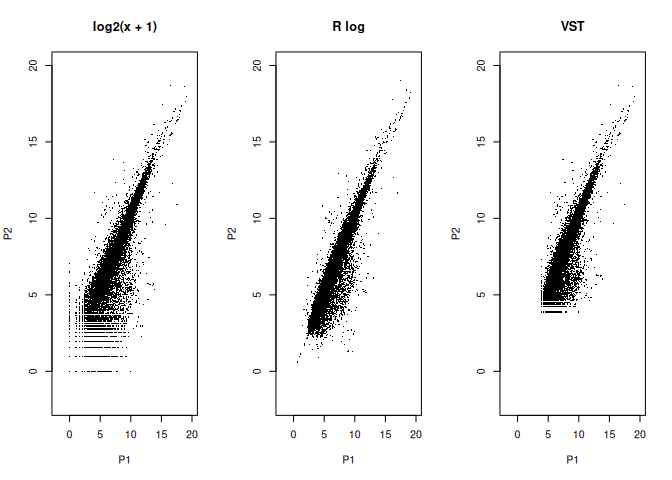

Identifying Differentially Expressed Genes in response to Exercise training in Mice
21BT10024 - Rohan R. Barsagade
May 2, 2024
Introduction
In this study, we downloaded a publicly available gene expression dataset GSE227516 from Gene Expression Omnibus (GEO) which investigated the effects of exercise on pancreatic islet function in mice. Our aim is to analyze this dataset using DESeq2 to identify genes that show altered expression in response to exercise training.
Install and Load Packages
# Install Required Packages (if not already installed)
if (!requireNamespace("BiocManager", quietly = TRUE)) {
install.packages("BiocManager")
}
if (!requireNamespace("DESeq2", quietly = TRUE)) {
BiocManager::install("DESeq2")
}
if (!requireNamespace("RUVSeq", quietly = TRUE)) {
BiocManager::install("RUVSeq")
}
if (!requireNamespace("pheatmap", quietly = TRUE)) {
BiocManager::install("pheatmap")
}
if (!requireNamespace("RColorBrewer", quietly = TRUE)) {
BiocManager::install("RColorBrewer")
}
if (!requireNamespace("ggplot2", quietly = TRUE)) {
install.packages("ggplot2")
}
if (!requireNamespace("ggrepel", quietly = TRUE)) {
install.packages("ggrepel")
}
# Load Packages
library(DESeq2)
library(RUVSeq)
library(pheatmap)
library(RColorBrewer)
library(ggplot2)
library(ggrepel)Data Import
We begin by importing the gene expression counts and sample information. The gene expression counts provide quantitative data on the expression levels of various genes across different samples, while the sample information helps us understand the experimental conditions associated with each sample.
# Import Gene Counts
COUNTS <- read.csv(file="data/GSE227516_counts.csv", header=TRUE, row.names=1)
head(COUNTS)## P1 P10 P2 P3 P4 P5 P6 P7 P8 P9
## ENSMUSG00000000001 1755 1226 2333 1330 1507 1287 1081 853 1108 1038
## ENSMUSG00000000003 0 0 0 0 0 0 0 0 0 0
## ENSMUSG00000000028 102 43 122 60 57 76 40 48 17 27
## ENSMUSG00000000031 3 2 0 2 1 7 0 1 0 0
## ENSMUSG00000000037 4 11 12 15 7 8 8 13 7 7
## ENSMUSG00000000049 4 0 24 3 11 5 0 0 2 4# Import Sample Information
META <- read.csv(file="data/sample_information.csv", header=TRUE)
head(META)## sample condition
## 1 P1 sedentary
## 2 P2 sedentary
## 3 P3 sedentary
## 4 P4 sedentary
## 5 P5 sedentary
## 6 P6 exerciseData Preprocessing
Before diving into the analysis, we perform some basic data exploration and cleaning steps. This involves inspecting the structure of the imported data, and ensuring that the data are formatted correctly for further analysis.
# Reorder columns
COUNTS <- COUNTS[, c("P1", paste0("P", 2:9), "P10")]
head(COUNTS)## P1 P2 P3 P4 P5 P6 P7 P8 P9 P10
## ENSMUSG00000000001 1755 2333 1330 1507 1287 1081 853 1108 1038 1226
## ENSMUSG00000000003 0 0 0 0 0 0 0 0 0 0
## ENSMUSG00000000028 102 122 60 57 76 40 48 17 27 43
## ENSMUSG00000000031 3 0 2 1 7 0 1 0 0 2
## ENSMUSG00000000037 4 12 15 7 8 8 13 7 7 11
## ENSMUSG00000000049 4 24 3 11 5 0 0 2 4 0# Rounding off and convert to matrix
COUNTS <- round(COUNTS)
COUNTS <- as.matrix(COUNTS)Dimensions of COUNTS matrix are : 52178
Rows x 10 Columns
# List unique sample conditions
unique(META$condition)## [1] "sedentary" "exercise"Differential Gene Expression Analysis
Create DESeq2 Dataset
We create a DESeq2 dataset from the gene expression counts and sample information. This step involves organizing the data into a format suitable for DESeq2 analysis, specifying the experimental design.
# Creating DESeq2 Dataset
dds <- DESeqDataSetFromMatrix(countData = COUNTS,
colData=META,
design=~condition)dim(dds)## [1] 52178 10Filtering Low-Count Genes
To improve the quality of our analysis and focus on genes with sufficient expression levels, we filter out genes with low counts. This step helps reduce noise and computational burden in downstream analyses.
# Filtering low count genes
threshold <- 10
dds <- dds[ rowMeans(counts(dds)) >= threshold,]The dimensions of the filtered dataset is: 15563 Rows x 10 Columns
DESeq2 Analysis
We perform differential expression analysis using DESeq2, which includes estimating size factors and dispersion, and fitting the negative binomial model.
# DESeq2 Analysis
prdds <- DESeq(dds)
prdds## class: DESeqDataSet
## dim: 15563 10
## metadata(1): version
## assays(4): counts mu H cooks
## rownames(15563): ENSMUSG00000000001 ENSMUSG00000000028 ...
## ENSMUSG00002076161 ENSMUSG00002076173
## rowData names(22): baseMean baseVar ... deviance maxCooks
## colnames(10): P1 P2 ... P9 P10
## colData names(3): sample condition sizeFactorNormalization and Transformation
Normalization and transformation are crucial steps to account for systematic biases and heterogeneity in sequencing data. We apply size factor estimation, regularized log transformation (rlog), and variance stabilizing transformation (VST) to normalize and transform the expression data. We will perform these steps and visually compare the results to understand their impact on the data.
# Normalization
norm_counts <- counts(prdds, normalized = TRUE)
norm_counts <- as.data.frame(norm_counts)
head(norm_counts)## P1 P2 P3 P4 P5
## ENSMUSG00000000001 1904.05489 2266.27915 1294.78609 1173.74110 1113.61972
## ENSMUSG00000000028 110.66302 118.51095 58.41140 44.39499 65.76154
## ENSMUSG00000000056 547.89044 525.52808 232.67209 215.74405 207.66801
## ENSMUSG00000000058 70.52055 28.17064 94.43177 71.65506 73.54909
## ENSMUSG00000000078 1118.56444 994.71489 583.14050 448.62301 461.19604
## ENSMUSG00000000085 192.03289 268.10675 445.87370 375.41023 402.35677
## P6 P7 P8 P9 P10
## ENSMUSG00000000001 1096.60040 1004.79919 1173.90924 1166.26505 1061.99960
## ENSMUSG00000000028 40.57726 56.54204 18.01124 30.33637 37.24795
## ENSMUSG00000000056 182.59766 171.98204 166.33913 180.89468 168.04888
## ENSMUSG00000000058 82.16895 63.60980 74.16394 101.12125 82.29198
## ENSMUSG00000000078 597.50012 400.50612 464.05438 1012.33604 498.08301
## ENSMUSG00000000085 463.59517 528.90368 481.00613 383.13717 409.72742# Transformation
mks <- estimateSizeFactors(dds)
rld <- rlogTransformation(prdds, blind = FALSE)
vsd <- varianceStabilizingTransformation(dds, blind=FALSE)Comparison of Transformations
Let’s compare the distributions of the raw counts, rlog transformed data, and VST transformed data using scatter plots and histograms.
# Scatter Plots Comparison
par(mfrow=c(1, 3))
lims <- c(-2, 20)
plot(log2(counts(mks, normalized=TRUE)[,1:2] + 1),pch=16, cex=0.3, main="log2(x + 1)", xlim=lims, ylim=lims)
plot(assay(rld)[,1:2], pch=16, cex=0.3, main="R log", xlim=lims, ylim=lims)
plot(assay(vsd)[,1:2], pch=16, cex=0.3, main="VST", xlim=lims, ylim=lims)
# Histograms Comparison
par(mfrow=c(1, 3))
hist(counts(mks))
hist(assay(rld))
hist(assay(vsd))By visually comparing these plots, we can see how the transformations affect the distribution of the data. The RLog Transform is leading to more symmetrical distributions in both the plots.
Exploratory Data Analysis
Before conducting differential expression analysis, we perform exploratory data analysis (EDA) to assess the quality of the data and explore patterns within the dataset. This includes visualizing sample-to-sample distances, examining dispersion estimates, and conducting principal component analysis (PCA) to identify potential batch effects or sample outliers.
Heatmap of sample-to-sample distances
# Sample-to-sample distances
sample_dist <- dist(t(assay(rld)))
sample_dist_matrix <- as.matrix(sample_dist)
colors <- colorRampPalette(rev(brewer.pal(9, "Blues")))(255)
pheatmap(sample_dist_matrix,
clustering_distance_rows=sample_dist,
clustering_distance_cols=sample_dist,
col=colors,)In this heatmap, each row and column represents a sample, and the color intensity in the cell at the intersection of two rows and columns represents the distance between those two samples. Samples that are more similar have a darker color, while samples that are more dissimilar have a lighter color.
PCA Plot
# PCA Plot
pca_data <- plotPCA(rld, intgroup = c("condition"), returnData = TRUE)
ggplot(pca_data, aes(x = PC1, y = PC2)) +
geom_point(size = 2, aes(color = condition)) +
geom_text_repel(aes(label = rownames(pca_data)), nudge_x = 0, nudge_y = 0) +
xlab(paste0("PC1: ", round(attr(pca_data, "percentVar")[1], 2) * 100, "% variance")) +
ylab(paste0("PC2: ", round(attr(pca_data, "percentVar")[2], 2) * 100, "% variance"))Samples from the sedentary condition (P1, P2, P3, P4, and P5) are more spread out on the left side of the plot. This suggests that there is more variation in gene expression among these samples compared to the exercise samples. P3, P4, and P5 appear closer together, while P1 and P2 are more separate. This could indicate that there are subgroups within the sedentary condition with distinct gene expression patterns. Samples from the exercise condition (P6, P7, P8, P9, and P10) cluster together on the right side of the plot. This indicates that these samples have similar gene expression profiles.
We can conclude that exercise induces a strong and consistent change in gene expression. This could be due to the activation of specific biological pathways in response to exercise.
Dispersion Plot
In the Dispersion Plot, the x-axis represents the mean of normalized counts, which is a measure of how much a gene is expressed on average across samples. The y-axis represents dispersion, which is a measure of how much the counts vary across samples. The red curve in the plot is a fitted model that tries to explain the relationship between the mean of normalized counts and dispersion.
# Dispersion Plot
plotDispEsts(prdds, main = "Dispersion plot",
genecol="gray20", fitcol="red",
finalcol="dodgerblue3"
) The dispersion plot shows the expected behavior. At low gene counts, the dispersion is high (around 1e+00) and tends to decrease at higher gene counts, ultimately becoming stable (around 1e-02).
Differential Expression Testing
Using DESeq2, we conduct differential expression testing to identify genes that exhibit significant changes in expression levels between experimental conditions. We set a significance threshold (alpha) and perform statistical tests to determine differential expression, taking into account factors such as fold change and adjusted p-values.
# DESeq2 Result
res05 <- results(prdds, alpha = 0.05)
res05 <- na.omit(res05)# Order by adjusted p-value
res05ordered <- res05[order(res05$padj),]
head(as.data.frame(res05ordered))## baseMean log2FoldChange lfcSE stat pvalue
## ENSMUSG00000066687 154.79197 -4.649220 0.4674371 -9.946194 2.620137e-23
## ENSMUSG00000111202 681.51463 -2.146136 0.2539254 -8.451838 2.867535e-17
## ENSMUSG00000030483 1319.06242 4.732123 0.5681532 8.328956 8.155871e-17
## ENSMUSG00000036814 1022.63610 4.742794 0.6092232 7.784985 6.972128e-15
## ENSMUSG00000031490 518.15350 -1.337340 0.1730918 -7.726192 1.108116e-14
## ENSMUSG00000044309 80.23379 3.023784 0.3903985 7.745379 9.529719e-15
## padj
## ENSMUSG00000066687 4.056758e-19
## ENSMUSG00000111202 2.219902e-13
## ENSMUSG00000030483 4.209245e-13
## ENSMUSG00000036814 2.698736e-11
## ENSMUSG00000031490 2.859494e-11
## ENSMUSG00000044309 2.859494e-11Visualization
We visualize the results of our analysis using various plots, including MA plots, volcano plots, and heatmaps. These visualizations help us identify differentially expressed genes (DEGs) and gain insights into the biological significance of the findings.
MA Plot
The MA plot shows the relationship between the mean of normalized counts (average expression level) and the log2 fold change (log2FC) for each gene. A positive log2FC indicates that the gene is upregulated in the second condition, while a negative log2FC indicates that the gene is downregulated.
The grey dots represent genes that are not statistically significant (adjusted p-value > 0.05), while the blue dots represent genes that are statistically significant (adjusted p-value <= 0.05).
# MA Plot
DESeq2::plotMA(
res05,
main="Sedentary vs Exercise, alpha=0.05",
ylim=c(-5,10),
cex=0.5,
colNonSig=adjustcolor("gray20", alpha.f=0.5),
colSig=adjustcolor("dodgerblue3", alpha.f=0.5)
)
abline(h = 1, col = '#ff0000' , lwd = 1)
abline(h = -1, col= '#ff0000', lwd = 1)Based on the plot, it appears that there are more genes that are up-regulated and few genes are down-regulated in the exercise condition compared to the sedentary condition. This is because there are a lot of blue dots in the positive log2 fold change region of the plot, and very few blue dots in the negative log2 fold change region.
Volcano Plot
The x-axis of a volcano plot shows the log2 fold change of a gene, which is the magnitude of the change in expression between the two conditions. The y-axis shows the -log10 of the adjusted p-value, which is a measure of the statistical significance of the change in expression. Genes with higher fold changes and lower p-values are considered to be more differentially expressed.
# Volcano Plot
res05$gene_status <- ifelse(
res05$padj < 0.05,
ifelse(
res05$log2FoldChange > 1,
"Up-Regulated",
ifelse(
res05$log2FoldChange < -1,
"Down-Regulated",
"Non-significant"
)
),
"Non-significant"
)
ggplot(
res05,
aes(x = log2FoldChange, y = -log10(padj), color = factor(gene_status))
) +
geom_point(size = 1, alpha = 0.7) +
scale_color_manual(values = brewer.pal(3, "Set1")) +
theme_minimal() +
ggtitle("Volcano Plot of Differentially Expressed Genes") +
xlab("log2 Fold Change") +
ylab("-log10(Adjusted p-value)") +
theme(legend.title = element_blank()) +
geom_hline(yintercept = -log10(0.05), linetype = "dashed") +
geom_vline(xintercept = c(-1, 1), linetype = "dashed")The red dots represent genes that are statistically significantly downregulated, the green dots represent genes that are statistically significantly upregulated, and the blue dots represent genes that are not statistically significant.
Results
Identification of Significant Differentially Expressed (DE) Genes
We can now identify significant differentially expressed genes based on statistical analysis. Genes with an adjusted p-value (padj) less than 0.05 and an absolute log2 fold change greater than 1 are considered significant DE genes.
Significant Differentially Expressed Genes
sig_genes <- as.data.frame(res05[res05$padj < 0.05 & abs(res05$log2FoldChange) > 1, ])
head(sig_genes)## baseMean log2FoldChange lfcSE stat pvalue
## ENSMUSG00000000028 58.04568 1.120913 0.3821458 2.933207 3.354796e-03
## ENSMUSG00000000088 941.33601 2.056720 0.4921483 4.179066 2.927090e-05
## ENSMUSG00000000126 22.28138 -1.736166 0.4389466 -3.955302 7.643810e-05
## ENSMUSG00000000142 168.36082 1.226489 0.4376317 2.802559 5.069898e-03
## ENSMUSG00000000154 268.26971 3.891792 0.5522852 7.046707 1.832011e-12
## ENSMUSG00000000159 210.98676 1.561928 0.4495139 3.474704 5.114178e-04
## padj gene_status
## ENSMUSG00000000028 1.904742e-02 Up-Regulated
## ENSMUSG00000000088 4.142608e-04 Up-Regulated
## ENSMUSG00000000126 9.311496e-04 Down-Regulated
## ENSMUSG00000000142 2.589813e-02 Up-Regulated
## ENSMUSG00000000154 5.999473e-10 Up-Regulated
## ENSMUSG00000000159 4.493917e-03 Up-RegulatedWe have identified a subset of genes that exhibit significant changes in expression levels under the experimental conditions. Let’s proceed by separating these genes into upregulated and downregulated categories.
Significant Up Regulated Genes
Genes displaying a positive log2FoldChange are classified as upregulated, indicating an increase in expression levels following exercise training
up_genes <- subset(sig_genes, log2FoldChange > 0)
head(up_genes)## baseMean log2FoldChange lfcSE stat pvalue
## ENSMUSG00000000028 58.04568 1.120913 0.3821458 2.933207 3.354796e-03
## ENSMUSG00000000088 941.33601 2.056720 0.4921483 4.179066 2.927090e-05
## ENSMUSG00000000142 168.36082 1.226489 0.4376317 2.802559 5.069898e-03
## ENSMUSG00000000154 268.26971 3.891792 0.5522852 7.046707 1.832011e-12
## ENSMUSG00000000159 210.98676 1.561928 0.4495139 3.474704 5.114178e-04
## ENSMUSG00000000171 1882.97767 1.171506 0.3725508 3.144554 1.663402e-03
## padj gene_status
## ENSMUSG00000000028 1.904742e-02 Up-Regulated
## ENSMUSG00000000088 4.142608e-04 Up-Regulated
## ENSMUSG00000000142 2.589813e-02 Up-Regulated
## ENSMUSG00000000154 5.999473e-10 Up-Regulated
## ENSMUSG00000000159 4.493917e-03 Up-Regulated
## ENSMUSG00000000171 1.119852e-02 Up-RegulatedSignificant Down Regulated Genes
Genes exhibiting a negative log2FoldChange are categorized as downregulated, suggesting a decrease in expression levels post-exercise.
down_genes <- subset(sig_genes,log2FoldChange < 0)
head(down_genes)## baseMean log2FoldChange lfcSE stat pvalue
## ENSMUSG00000000126 22.28138 -1.736166 0.4389466 -3.955302 7.643810e-05
## ENSMUSG00000000216 214.69887 -1.793448 0.5882681 -3.048691 2.298406e-03
## ENSMUSG00000000276 655.87930 -1.117953 0.3913038 -2.856996 4.276715e-03
## ENSMUSG00000000982 10.51361 -1.857637 0.7214622 -2.574822 1.002917e-02
## ENSMUSG00000002221 1792.23424 -1.150701 0.3182302 -3.615938 2.992620e-04
## ENSMUSG00000002578 114.86196 -1.590720 0.3699130 -4.300255 1.706015e-05
## padj gene_status
## ENSMUSG00000000126 0.0009311496 Down-Regulated
## ENSMUSG00000000216 0.0142287947 Down-Regulated
## ENSMUSG00000000276 0.0229360506 Down-Regulated
## ENSMUSG00000000982 0.0427941532 Down-Regulated
## ENSMUSG00000002221 0.0029031789 Down-Regulated
## ENSMUSG00000002578 0.0002597269 Down-RegulatedHeatmap of top differentially expressed genes
Top 10 Up Regulated Genes
top_up <- head(up_genes[order(up_genes$log2FoldChange, decreasing = TRUE), ], 10)
top_up_exp <- assay(rld)[rownames(top_up), ]
pheatmap(top_up_exp,
cluster_rows = FALSE,
cluster_cols = FALSE,
scale = "row",
show_colnames = TRUE,
col=brewer.pal(name="RdBu", n=11),
main = "Top Up Regulated Genes Heatmap")
Top 10 Down Regulated Genes
top_down <- head(down_genes[order(down_genes$log2FoldChange, decreasing = TRUE), ], 10)
top_down_exp <- assay(rld)[rownames(top_down), ]
pheatmap(top_down_exp,
cluster_rows = FALSE,
cluster_cols = FALSE,
scale = "row",
show_colnames = TRUE,
col=brewer.pal(name="RdBu", n=11),
main = "Top Down Regulated Genes Heatmap")Conclusion
n_total <- nrow(COUNTS)
n_de_genes <- nrow(sig_genes)
n_up_genes <- nrow(up_genes)
n_down_genes <- nrow(down_genes)Our analysis of the GSE227516 Dataset provided insights into the molecular changes occurring in pancreatic islet function following exercise training in mice.
We analyzed a total of 52178 genes, out of which 2478 genes exhibited significant differential expression post-exercise. This means their expression levels were significantly different between the compared groups. Among the DE genes, 2059 genes were upregulated, indicating increased expression levels,while 419 genes were downregulated, suggesting decreased expression levels.
We can now save these significant genes along with their regulation status in a separate file.
# Combine significant genes with their categories
sig_genes$gene_status <- ifelse(sig_genes$log2FoldChange > 0, "Up-Regulated", "Down-Regulated")
sig_genes$gene_id <- rownames(sig_genes)
# Write the data frame to a file
if (!file.exists("result")) {
dir.create("result")
}
write.table(sig_genes, file = "result/significant_DE_genes.csv", sep = ",", row.names = FALSE)Session Summary
sessionInfo()## R version 4.4.0 (2024-04-24)
## Platform: x86_64-pc-linux-gnu
## Running under: Arch Linux
##
## Matrix products: default
## BLAS: /usr/lib/libblas.so.3.12.0
## LAPACK: /usr/lib/liblapack.so.3.12.0
##
## locale:
## [1] LC_CTYPE=en_US.UTF-8 LC_NUMERIC=C
## [3] LC_TIME=en_US.UTF-8 LC_COLLATE=en_US.UTF-8
## [5] LC_MONETARY=en_US.UTF-8 LC_MESSAGES=en_US.UTF-8
## [7] LC_PAPER=en_US.UTF-8 LC_NAME=C
## [9] LC_ADDRESS=C LC_TELEPHONE=C
## [11] LC_MEASUREMENT=en_US.UTF-8 LC_IDENTIFICATION=C
##
## time zone: Asia/Kolkata
## tzcode source: system (glibc)
##
## attached base packages:
## [1] stats4 stats graphics grDevices utils datasets methods
## [8] base
##
## other attached packages:
## [1] ggrepel_0.9.5 ggplot2_3.5.1
## [3] RColorBrewer_1.1-3 pheatmap_1.0.12
## [5] RUVSeq_1.37.0 edgeR_4.1.31
## [7] limma_3.59.10 EDASeq_2.37.0
## [9] ShortRead_1.61.4 GenomicAlignments_1.39.5
## [11] Rsamtools_2.19.4 Biostrings_2.71.6
## [13] XVector_0.43.1 BiocParallel_1.37.1
## [15] DESeq2_1.43.5 SummarizedExperiment_1.33.3
## [17] Biobase_2.63.1 MatrixGenerics_1.15.1
## [19] matrixStats_1.3.0 GenomicRanges_1.55.4
## [21] GenomeInfoDb_1.39.14 IRanges_2.37.1
## [23] S4Vectors_0.41.7 BiocGenerics_0.49.1
## [25] rmarkdown_2.26 knitr_1.46
##
## loaded via a namespace (and not attached):
## [1] DBI_1.2.2 bitops_1.0-7 deldir_2.0-4
## [4] httr2_1.0.1 biomaRt_2.59.1 rlang_1.1.3
## [7] magrittr_2.0.3 compiler_4.4.0 RSQLite_2.3.6
## [10] GenomicFeatures_1.55.4 png_0.1-8 vctrs_0.6.5
## [13] pwalign_0.99.2 stringr_1.5.1 pkgconfig_2.0.3
## [16] crayon_1.5.2 fastmap_1.1.1 dbplyr_2.5.0
## [19] labeling_0.4.3 utf8_1.2.4 UCSC.utils_0.99.7
## [22] bit_4.0.5 xfun_0.43 zlibbioc_1.49.3
## [25] cachem_1.0.8 jsonlite_1.8.8 progress_1.2.3
## [28] blob_1.2.4 DelayedArray_0.29.9 jpeg_0.1-10
## [31] parallel_4.4.0 prettyunits_1.2.0 R6_2.5.1
## [34] bslib_0.7.0 stringi_1.8.3 rtracklayer_1.63.3
## [37] jquerylib_0.1.4 Rcpp_1.0.12 R.utils_2.12.3
## [40] Matrix_1.7-0 tidyselect_1.2.1 abind_1.4-5
## [43] yaml_2.3.8 codetools_0.2-20 hwriter_1.3.2.1
## [46] curl_5.2.1 lattice_0.22-6 tibble_3.2.1
## [49] withr_3.0.0 KEGGREST_1.43.1 evaluate_0.23
## [52] BiocFileCache_2.11.2 xml2_1.3.6 pillar_1.9.0
## [55] BiocManager_1.30.22 filelock_1.0.3 generics_0.1.3
## [58] RCurl_1.98-1.14 hms_1.1.3 munsell_0.5.1
## [61] scales_1.3.0 glue_1.7.0 tools_4.4.0
## [64] interp_1.1-6 BiocIO_1.13.1 locfit_1.5-9.9
## [67] XML_3.99-0.16.1 grid_4.4.0 latticeExtra_0.6-30
## [70] AnnotationDbi_1.65.2 colorspace_2.1-0 GenomeInfoDbData_1.2.12
## [73] restfulr_0.0.15 cli_3.6.2 rappdirs_0.3.3
## [76] fansi_1.0.6 S4Arrays_1.3.7 dplyr_1.1.4
## [79] gtable_0.3.5 R.methodsS3_1.8.2 sass_0.4.9
## [82] digest_0.6.35 aroma.light_3.33.0 SparseArray_1.3.7
## [85] farver_2.1.1 rjson_0.2.21 memoise_2.0.1
## [88] htmltools_0.5.8.1 R.oo_1.26.0 lifecycle_1.0.4
## [91] httr_1.4.7 statmod_1.5.0 bit64_4.0.5
## [94] MASS_7.3-60.2